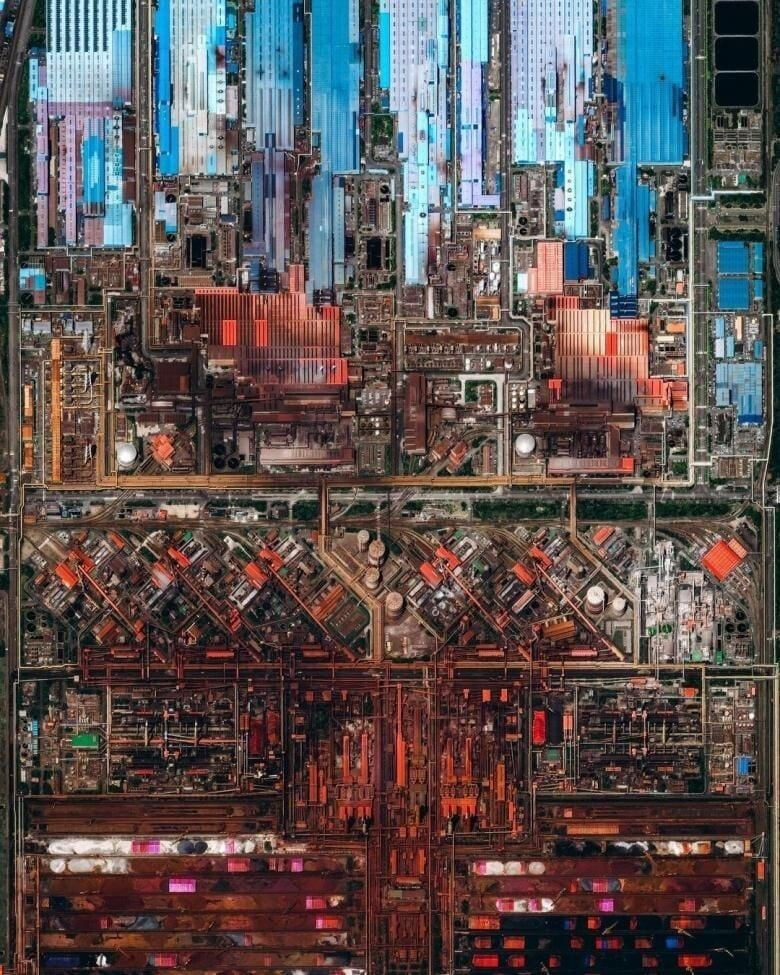

신에게 돌아가 달라고 빌어야함

신에게 돌아가 달라고 빌어야함
아흐 ㅅㅂ 팩토리오 갑자기 땡기네
ㅇㅈ 이런거보면 개땡겨서 좀 하다가 머리 쥐날 거같아서 끔
검정 연구이후로 개같아지는 공정
팩토리오에서도 커지면 힘들긴함
팩토리오임?
광양
광양제철소
과냥
팩토리오 공장 만들고 줌아웃하면 저런 느낌이던데 ㅋㅋ
절대 깔끔하게 안만들어지고 찐빠도 많은데 멀리서 보면 그래도 멋있어 보이고 ㅋㅋ
아 갑자기 하고싶어지네
그게 공장이지 ㅋㅋ
나도 한동안 접었다가
최근에 초반 지루함이 싫어서 모드 좀 깔고 하는데
진짜 시간 살살 녹음..
서버 열어서 사람들이랑 같이 하고 싶다
할인 절대 안하는 악덕 개발자!
그래서 친구들한테 소매넣기를 못함...
취향맞으면 본전 뽑고도 남긴한데 ㅋㅋㅋㅋㅋㅋㅋ
안맞으면 그냥 퇴근 후 추가노동이라 ㅋㅋㅋㅋ
포스코 광양제철소네
아 진짜 설계 생각만해도 끔찍허다
다이슨스피어 하다가 대가리깨질거같아서 흰색큐브 직전에 접은상태
전자 기판인가 했더니 공장이네 쉬펄
반도체 그 자체
안 바꿔줘 돌아가 판사님 등장하면 다 돌아감.
워해머 인줄
두려워 말라.
lcl 정화시설
울산은 진짜 도시자체가 공장이잖아
아에 자연상태 원물에서 자동차까지 뿅나오는 도시
울산엔 제철소가 없어
포항이랑 울산이랑 붙어있는 줄알았오
포항 밑에 경주 있고 그 아래 울산이 있음
저런덴 구획 나눠서 공장장도 여러명이겠지?
펙토리오 생각나네, 갑자기 뭐 물건 안나오면 뭐가 문제지? 하고 확인하고 수리하고
설비 하나 고장나면 뒷 공정까지 물량 밀리고 그 손해비용은 상상하기 싫음ㅋㅋㅋ
중동 프로젝트하면서 레이아웃, 나중에 90% 3D 모델까지 보면 멋있었음. MC나 상업가동 즈음에 드론뷰 보면 또 멋있고...
여수공항 착륙즈음에 여수산단 볼 수 있는데 이것도 멋있음. 특히 야간에
새벽에 화학산단 달리니까 야경 지리더라 ㅋㅋ
17년까진 산위에 있는 산업단지공단 건물에서 지리는 야경 볼 수 있었는데 산까지 싹 밀고 롯데케미칼이 공장지음ㅠ
머신스피릿이 존재하나봐
저 꽉차보이는곳 안에서도 공정 개선할거 개선하고 증설할거 증설하고 공장신설하고 다함 ㄷㄷ
팩토리오에선 어케어케 돌아는 가던데 ㅋㅋㅋ
현실에서도 돌아는가지ㅋㅋ
팩토리오 글레바 생각나네 ㅅㅂ 하도 좆박은 기억이 생생해서 닉네임으로 해둠 ^^
행추모 텔루스 루비아 크루시블 ㄱㄱ
철때문에 시뻘건거야?
제선제강은 빨간색
압연은 하늘색 이렇게 짓는걸로 아는데
철이랑 원료땜시 더 빨갛게되는듯
집적회로도같네
블루프린트 없이 하는 팩토리오 생각만으로도 끔찍하다!
존나 높은데서 찍었는데 왜곡이 없네 신기하당
최적화 안정화 시키는데 사람 갈리는거 생각하면 ㅋㅋㅋ
팩토리오+밥스모드 하면 딱 저런 느낌으로 만들어 지기는 하지..
제철소,정유소 둘다 규모가 어마어마하고 이걸 제대로 굴릴 수 있는 나라가 몇없음
제철소 왔다갔다 하는 흰색 포터를 봤는데, 핑크색이 되어가더라고....
남해대교 건널때 보이는 커다란 구조물이 저거였구만
돌리면돼지